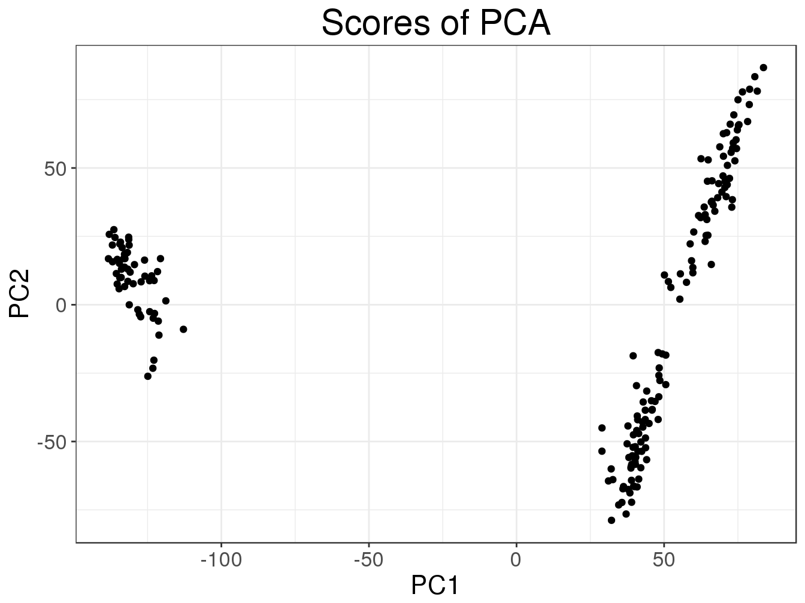

Genomic data analysis with large matrices in R
Florian Privé
October 21, 2017
For multiple genomic data, most of the information can be stored as matrices. The most striking example is with SNP data, which can be stored as matrices with thousands to hundreds of thousands of rows (samples) with hundreds of thousands to dozens of millions of columns (SNPs) (Bycroft et al. 2017). This results in datasets of GygaBytes to TeraBytes of data.
Other fields in genomics, such as proteomics or expression data, use data stored as matrices potentially of size larger than available memory.
To address large data size in R, we can use memory-mapping for accessing large matrices stored on disk instead of in RAM. This has existed in R for several years thanks to package bigmemory (Kane, Emerson, and Weston 2013).
More recently, two packages which use the same principle as bigmemory have been developed: bigstatsr and bigsnpr (Privé, Aschard, and Blum 2017). Package bigstatsr implements many statistical tools for several types of Filebacked Big Matrices (FBMs), making it usable for any type of genomic data that can be encoded as a matrix. The statistical tools in bigstatsr include implementation of multivariate sparse linear models, Principal Component Analysis (PCA), matrix operations, and numerical summaries. Package bigsnpr implements algorithms which are specific to the analysis of SNP arrays, making use of already implemented features in package bigstatsr.
In this small tutorial, we’ll see the potential benefits of using memory-mapping instead of standard R matrices in memory, by using bigstatsr and bigsnpr.
Examples
Example of expression data
Let’s use the NCBI GEO archive to get some example expression data (Barrett et al. 2012).
# http://bioconductor.org/packages/release/bioc/html/GEOquery.html
suppressMessages(library(GEOquery))
# All data
gds <- getGEO("GDS3929")## File stored at:## /tmp/RtmpOTdb2V/GDS3929.soft.gzstr(gds, max.level = 2)## Formal class 'GDS' [package "GEOquery"] with 3 slots
## ..@ gpl :Formal class 'GPL' [package "GEOquery"] with 2 slots
## ..@ dataTable:Formal class 'GEODataTable' [package "GEOquery"] with 2 slots
## ..@ header :List of 23format(object.size(gds), units = "MB")## [1] "37.1 Mb"df <- gds@dataTable@table
format(object.size(df), units = "MB")## [1] "37 Mb"# Part of the data that can be encoded as a matrix
mat <- t(df[-(1:2)])
dim(mat)## [1] 183 24526format(object.size(mat), units = "MB")## [1] "35.6 Mb"In this data, 96% of the information can be encoded as a matrix. For larger data, this could increase to more than 99%. Let us store this as a Filebacked Big Matrix (FBM).
# https://github.com/privefl/bigstatsr
library(bigstatsr)
fbm <- big_copy(mat)
# Same data?
all.equal(fbm[], mat, check.attributes = FALSE)## [1] TRUE# Size in memory
format(object.size(fbm), units = "MB")## [1] "0 Mb"# File where the data is backed
fbm$backingfile## [1] "/tmp/RtmpOTdb2V/file6b912eee7e5f.bk"So, now the matrix is stored on disk and basically takes no memory. So, using FBMs would take 100 times less space to store the data.
For omic data, computing PCA (or SVD) is sometimes useful to assess the structure in the data. Let’s do this.
system.time(
svd <- svd(scale(mat), nu = 10, nv = 10)
)## user system elapsed
## 2.265 0.042 2.316plot(svd$u)
system.time(
svd2 <- big_SVD(fbm, big_scale(), k = 10)
)## (2)## user system elapsed
## 0.253 0.004 0.257plot(svd2)
plot(svd2, type = "scores")
The goal of memory-mapping is to not have all the data in memory. This force programmers to think more before implementing algorithms. This can lead to implementations that can be much faster than current R implementations. Moreover, data stored on disk is shared between processes so that parallelism in algorithms can be implemented more easily and efficiently, for example removing the need to copy the data.
Example of SNP data
Let’s use some 1000 Genomes data from Gad Abraham’s GitHub repository which have been filtered and quality-controled.
tmpfile <- tempfile()
base <- paste0(
"https://github.com/gabraham/flashpca/raw/master/HapMap3/",
"1kg.ref.phase1_release_v3.20101123_thinned_autosomal_overlap")
exts <- c(".bed", ".bim", ".fam")
purrr::map2_int(paste0(base, exts), paste0(tmpfile, exts), ~download.file(.x, .y))## [1] 0 0 0First, we have to transform these data in PLINK format to an FBM. In package bigsnpr, function snp_readBed is provided to do just that. It is implemented with Rcpp, which makes it very fast. Package Rcpp makes easy to use C++ code in R and with R objects.
# https://github.com/privefl/bigsnpr
library(bigsnpr)
rdsfile <- snp_readBed(paste0(tmpfile, ".bed"), tempfile())
bigsnp <- snp_attach(rdsfile)
(G <- bigsnp$genotypes)## A Filebacked Big Matrix of type 'code 256' with 1092 rows and 14079 columns.object.size(G)## 656 bytesG.matrix <- G[]
format(object.size(G.matrix), units = "MB")## [1] "117.3 Mb"For large SNP data, this format can save us a lot of memory.
system.time(
svd <- svd(scale(G.matrix), nu = 10, nv = 10)
)## user system elapsed
## 9.154 0.741 9.895plot(svd$u)
system.time(
svd2 <- big_SVD(G, big_scale(), k = 10)
)## (2)## user system elapsed
## 0.941 0.045 0.986plot(svd2)
plot(svd2, type = "scores")
And with smart algorithms, we can save a lot of computation time.
Learn more
You can find vignettes and documentation of packages bigstatsr and bigsnpr in their GitHub repositories. In order to find more details about memory-mapping and packages bigstatsr and bigsnpr, please refer to the corresponding paper (Privé, Aschard, and Blum 2017).
You’ll see for example that when using memory-mapping, it’s possible to make a parallelized algorithm for computing partial Singular Value Decomposition that is lightning fast, using an already implemented algorithm in another R package.

You’ll also see that it is possible to make a Genome-Wide Association Study (GWAS) on 500,000 individuals genotyped on more than 1,000,000 SNPs, thus analyzing more than 100 GB of compressed data on a single desktop computer.
References
Barrett, Tanya, Stephen E Wilhite, Pierre Ledoux, Carlos Evangelista, Irene F Kim, Maxim Tomashevsky, Kimberly A Marshall, et al. 2012. “NCBI Geo: Archive for Functional Genomics Data Sets—update.” Nucleic Acids Research 41 (D1). Oxford University Press: D991–D995.
Bycroft, Clare, Colin Freeman, Desislava Petkova, Gavin Band, Lloyd T Elliott, Kevin Sharp, Allan Motyer, et al. 2017. “Genome-Wide Genetic Data on 500,000 Uk Biobank Participants.” BioRxiv. Cold Spring Harbor Laboratory. doi:10.1101/166298.
Kane, Michael J, John W Emerson, and Stephen Weston. 2013. “Scalable Strategies for Computing with Massive Data.” Journal of Statistical Software 55 (14): 1–19. doi:10.18637/jss.v055.i14.
Privé, Florian, Hugues Aschard, and Michael G. B. Blum. 2017. “Efficient Management and Analysis of Large-Scale Genome-Wide Data with Two R Packages: Bigstatsr and Bigsnpr.” BioRxiv. Cold Spring Harbor Laboratory. doi:10.1101/190926.